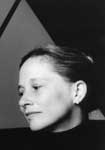

|  |
Rebecca Penneys leads a distinguished career as a recitalist, chamber musician, orchestral soloist and educator. For four decades her intelligent and insightful performances have held audiences spellbound. She combines a busy concert schedule with guidance for an international class of students at Eastman and Chautauqua and gives master classes and seminars at other
major teaching institutions worldwide. She has been Professor of Piano at Eastman since 1980 and chairs the Piano Department at the Chautauqua Institution where she has been a resident artist and teacher for twenty-four consecutive seasons. She has created a program there which is unique in the world of piano instruction. In 2001, she was appointed Visiting Artist at
St. Petersburg College, Florida.
Born in Los Angeles, Rebecca made her debut at the age of nine and performed as soloist with the Los Angeles Philharmonic at the age of eleven. At seventeen, after winning many young artist competitions in the United States, she was awarded the unprecedented Special Critics’ Prize for her performances at the Seventh International Chopin Piano Competition in
Warsaw, Poland. Subsequently, Rebecca won the Most Outstanding Musician Prize at the Fifth Vianna Da Motta International Piano Competition (Portugal) and was Top Prizewinner in the Second Paloma O’Shea International Piano Competition (Spain). In 1974, she founded the acclaimed New Arts Trio, which won the prestigious Naumburg Award for Chamber Music (New York), on
two separate occasions. The Trio has been Trio-in-Residence at the Chautauqua Institution since 1978. Her teachers include Aube Tzerko, Leonard Stein, Rosina Lhevinne, Artur Rubinstein, Menahem Pressler, Gyorgy Sebok and Janos Starker.
As a performer Rebecca has appeared in East Asia, New Zealand, Australia, Europe, Israel, South America, and throughout the United States and Canada as soloist and chamber musician. She has performed numerous Sound/Color recitals exploring the connections between the sensory system and sound, color and music. In recent years she was keynote speaker, performer and
teacher at North Carolina Music Teachers Association Conventions in Raleigh, Charlotte, and Fayetteville, the Pennsylvania Music Teacher’s Convention in Harrisburg, Pennsylvania as well as Guest Teacher at the Tel Hai International Music Festival, Israel. She was also featured artist/teacher on the Pabst Theater Series, Milwaukee, Wisconsin and performed and taught
in California, Ohio, Michigan, Minnesota, North Carolina, Wisconsin, New York City area, Ontario and Quebec. In the last two years, she has given recitals and master classes at such schools as Roosevelt Musical College, New England Conservatory, Longy School, Grinnell College, Skidmore College, Heidelberg College, Tarleton State University, and Wisconsin Conservatory of Music. She was guest artist at the American Liszt Society Convention, the University of Iowa’s Distinguished Artist Series, and the Artist Series at L’Elegance in Sarasota, Florida. Rebecca’s recent National Public Radio appearances (1999-2001) include: an interview with Brenda Tremblay for WXXI radio about her “All Brahms” CD; an appearance on the Infinite Mind about her teaching techniques; featured guest on Chautauqua Edition, a program that takes a fresh look at issues of influence and value in the arts.
Rebecca Penneys has three recent solo CD’s available. “The Voice of the Piano” works by Mozart, Mendelssohn, Schubert and Gershwin and “The Complete Chopin Etudes” are both on the Centaur label. “All Brahms,” a CD that includes the ten Hungarian Dances arranged by Brahms for two hands, Op. 10 Ballads and Op. 116 Fantasies is on Fleur De Son Classics. This spring a new
solo CD, “Recital Gems,” consisting of works by Bartok, Mozart, Chopin, Debussy, Liszt and 20th century American Rags will be released on Fleur De Son. The New Arts Trio has two new CD’s on the Fleur De Son label: the “Arensky Trios” and “Beethoven’s Arrangements for Piano Trio” - the 2nd Symphony & the Septet. The first in a series of New Arts Trio CD’s from Chautauqua will appear soon on the Fleur De Son label. Other Penneys’ recordings are available on the CBS-Sony, Pantheon, and Orion labels and the Society for Chamber Music, Rochester, New York. |